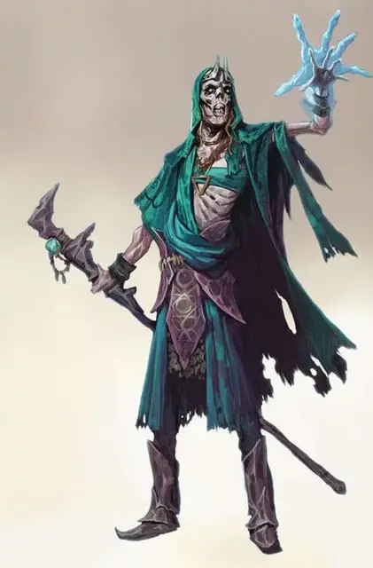

Дэтлок
Deathlock
Средняя Нежить, нейтрально-злая

Класс Доспеха 12 (15 с магическим доспехом)
Хиты 36 (8к8)
Скорость 30 футов
| мод | спас | ||
|---|---|---|---|
| СИЛ | 11 | +0 | +0 |
| ЛОВ | 15 | +2 | +2 |
| ТЕЛ | 10 | +0 | +0 |
| мод | спас | ||
|---|---|---|---|
| ИНТ | 14 | +2 | +4 |
| МДР | 12 | +1 | +1 |
| ХАР | 16 | +3 | +5 |
Навыки История +4, Магия +4
Сопротивление урону некротическая энергия; дробящий, колющий, рубящий от немагических атак, кроме нанесённых посеребрённым оружием
Иммунитет к урону яд
Иммунитет к состояниям отравление, истощение
Чувства тёмное зрение 60 футов, пассивное Восприятие 11
Опасность 4 (1100 опыта)
Бонус мастерства +2
Среда обитания Город
Особенности
Языки. : Языки, что знал при жизни.
Врождённое колдовство. Врождённое колдовство дэтлока основывается на Харизме (Сл спасброска от заклинания 13). Он может накладывать следующие заклинания, не нуждаясь в материальных компонентах.
• Неограниченно: обнаружение магии [detect magic], маскировка [disguise self], доспехи мага [mage armor];
Использование заклинаний. Дэтлок является заклинателем 5 уровня. Его базовой характеристикой является Харизма (Сл спасброска от заклинаний 13; +5 к попаданию атаками заклинаниями). Он восстанавливает потраченные ячейки заклинаний после завершения короткого или продолжительного отдыха. Он знает следующие заклинания колдуна.
• Заговоры (неограничено): леденящее прикосновение [chill touch], мистический заряд [eldritch blast], волшебная рука [mage hand];
• 1-3 уровень (2 ячейки 3 уровня): руки Хадара [arms of Hadar], рассеивание магии [dispel magic], удержание личности [hold person], голод Хадара [hunger of Hadar], невидимость [invisibility], паук [spider climb];
Сопротивление изгнанию. Дэтлок совершает с преимуществом спасброски от всех эффектов, изгоняющих нежить.
Вы можете изменить дэтлока, заменив одно или несколько из всех его заклинания на характерные для его покровителя. Ниже приведены примеры.
Покровитель архифея:. воображаемая сила [phantasmal force], гипнотический узор [hypnotic pattern], голод Хадара [hunger of Hadar],мерцание [blink], огонь фей [faerie fire], усыпление [sleep].
Покровитель исчадие:. адское возмездие [hellish rebuke], глухота/слепота [blindness/deafness], огненные ладони [burning hands], огненный шар [fireball], палящий луч [scorching ray], приказ [command].
Покровитель Великий Древний:. воображаемая сила [phantasmal force], голод Хадара [hunger of Hadar], диссонирующий шёпот [dissonant whisper], доспех Агатиса [armor of Agathys], жуткий смех Таши [tasha’s hideous laughter], обнаружение мыслей [detect thoughts].
Действия
Смертельные Когти. Рукопашная атака оружием: +4 к попаданию, досягаемость 5 футов, одна цель. Попадание: 9 (2к6 + 2) урона некротической энергией.
Описание
Нарушение договора между колдуном и покровителем не относится к малозначимым событиям, по крайней мере для колдуна. Последствия разрыва такого договора могут быть ужасны, а иногда и смертельны. Колдун, который не оправдал надежд злого покровителя, рискует восстать из мёртвых в виде дэтлока - отвратительной нежити, призванной служить своему покровителю после смерти.
Необычайно могущественный некромант может отыскать способ создания дэтлока, а затем заставить его служить себе, исполняя роль его покровителя.
Покорные и одержимые. Разум поднятого дэтлока подчинён лишь непреодолимому желанию служить. Цели и амбиции, которые были у него при жизни, исчезают, если неугодны его покровителю, поскольку желания покровителя становятся той волей, которая движет дэтлоком. Существо сразу же начинает действовать во имя своего покровителя. Для выполнения сложной задачи дэтлок может быть вынужден служить другому могущественному существу или искать себе слуг.
Какой бы ни была цель, она всегда отражает интересы покровителя, от мелких проблем и до вопросов вселенского масштаба. Дэтлок, находящийся в рабстве у исчадия, может действовать с целью уничтожения храма доброго божества, в то время как слуга Великого Древнего может искать редкие компоненты для призыва ужасающей сущности в мир.
Природа нежити. Дэтлок не нуждается в воздухе, еде, питье или сне.